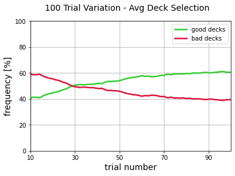
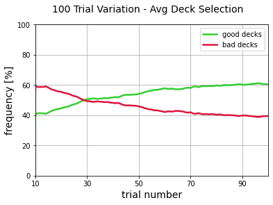

1. Data Exploration¶
1.1. Import Libraries & Read In Data¶
import pandas as pd
import numpy as np
import matplotlib.pyplot as plt
import pyreadr
import itertools
from sklearn.preprocessing import StandardScaler
data = pyreadr.read_r('../data/IGTdata.rdata')
Overview of dataset
print("{:12}| {:57}| {:30}".format('DF NAME','COLUMN NAMES','ROW NAMES'))
print('-'*110)
for key, value in data.items():
if value.shape[1] > 5:
column_names = ''.join([', '.join(value.columns[:3]), ',...,', ', '.join(value.columns[-2:])])
else:
column_names = ', '.join(value.columns)
row_names = [str(v) for v in list(value.index.values)]
row_names = ''.join([', '.join(row_names[:2]), ',...,',', '.join(row_names[-2:])])
print("{:12}| {:57}| {:30}".format(key,column_names,row_names))
DF NAME | COLUMN NAMES | ROW NAMES
--------------------------------------------------------------------------------------------------------------
choice_95 | Choice_1, Choice_2, Choice_3,...,Choice_94, Choice_95 | Subj_1, Subj_2,...,Subj_14, Subj_15
wi_95 | Wins_1, Wins_2, Wins_3,...,Wins_94, Wins_95 | Subj_1, Subj_2,...,Subj_14, Subj_15
lo_95 | Losses_1, Losses_2, Losses_3,...,Losses_94, Losses_95 | Subj_1, Subj_2,...,Subj_14, Subj_15
index_95 | Subj, Study | 0, 1,...,13, 14
choice_100 | Choice_1, Choice_2, Choice_3,...,Choice_99, Choice_100 | Subj_1, Subj_2,...,Subj_503, Subj_504
wi_100 | Wins_1, Wins_2, Wins_3,...,Wins_99, Wins_100 | Subj_1, Subj_2,...,Subj_503, Subj_504
lo_100 | Losses_1, Losses_2, Losses_3,...,Losses_99, Losses_100 | Subj_1, Subj_2,...,Subj_503, Subj_504
index_100 | Subj, Study | 0, 1,...,502, 503
choice_150 | Choice_1, Choice_2, Choice_3,...,Choice_149, Choice_150 | Subj_1, Subj_2,...,Subj_97, Subj_98
wi_150 | Wins_1, Wins_2, Wins_3,...,Wins_149, Wins_150 | Subj_1, Subj_2,...,Subj_97, Subj_98
lo_150 | Losses_1, Losses_2, Losses_3,...,Losses_149, Losses_150 | Subj_1, Subj_2,...,Subj_97, Subj_98
index_150 | Subj, Study | 0, 1,...,96, 97
The studies are grouped by the number of trials (t) completed; 95, 100 or 150.
For each group, there are 4 dataframes, where each row correspnds to a subject (s):
choice_t :
Entries are either 1, 2, 3 or 4 which correspond to deck A, B, C and D, respectively.
Dimensionality is s x t.
The entry of the second row and third column indicates the choice made by the second subject on the third trial.
wi_t :
Contains the win achieved as a result of each choice.
Dimensionality is s x t.
The entry of the second row and third column corresponds to the reward received by the second subject on third trial.
lo_t :
Contains the loss incurred as a result of each choice.
Dimensionality is s x t.
The entry of the second row and third column corresponds to the loss incurred by the second subject on third trial.
index_t :
Entries are the name of the first author of the study that reports the data name of the first author of the study that reports the data of the corresponding participant.
Dimensionality is s x 2.
The entry of the second row indicates which study the second subject participated in.
1.2. Data Cleaning & Validation¶
Update index_t row names for confirmity.
All other dataframes have consistent row names of the form Subj_1, Subj_2, Subj_3 etc.
for key, value in data.items():
if not key[0:5] == 'index':
continue
data[key] = value.drop(columns=['Subj'])
data[key].index = ['Subj_'+str(i) for i in range(1,value.shape[0]+1)]
data['index_150'].head()
| Study | |
|---|---|
| Subj_1 | Steingroever2011 |
| Subj_2 | Steingroever2011 |
| Subj_3 | Steingroever2011 |
| Subj_4 | Steingroever2011 |
| Subj_5 | Steingroever2011 |
Add payoff scheme to index_t
study_payscheme = {'Fridberg':1, 'Horstmann':2, 'Kjome':3, 'Maia':1, 'Premkumar':3, 'SteingroverInPrep':2, 'Wood':3, 'Worthy':1, 'Steingroever2011':2, 'Wetzels':2}
for key, value in data.items():
if not key[0:5] == 'index':
continue
payscheme = [study_payscheme[val[0]] for val in value.values]
data[key]['PayScheme'] = payscheme
data['index_150'].head()
| Study | PayScheme | |
|---|---|---|
| Subj_1 | Steingroever2011 | 2 |
| Subj_2 | Steingroever2011 | 2 |
| Subj_3 | Steingroever2011 | 2 |
| Subj_4 | Steingroever2011 | 2 |
| Subj_5 | Steingroever2011 | 2 |
Verify table 1 (include link to it).
Steingroever et al. [2015] speculates that the sample size may be less than 617 due to “missing data for one participant in Kjome et al. [2010], and for two participants in Wood et al. [2005]”. According to table 1 (link again), there should be 19 participants in Kjome et al. [2010] and 153 in Wood et al. [2005].
print("Total number of subjects:", data['choice_95'].shape[0] + data['choice_100'].shape[0] + data['choice_150'].shape[0])
Total number of subjects: 617
Appears in order, let’s take a closer look to be sure.
print("Subjects in Kjome study:", len(data['index_100'][data['index_100']['Study'] == 'Kjome']))
print("Subjects in Wood study:", len(data['index_100'][data['index_100']['Study'] == 'Wood']))
Subjects in Kjome study: 19
Subjects in Wood study: 153
Confirms correct number of subjects reported.
Check for nulls/ unexpected entries
Sanity checking the dataframes for unusual entries, such as null values and unexpected data types. Additionally, confirming the dataframes are structured as expected, e.g. checking that all entries in lo_t are negative integers and that 1, 2, 3 and 4 are the only entries in choice_t.
for key, value in data.items():
try:
uniq_entries = ', '.join([("{:.2f} ({:.2f}%)".format(entry, count*100)) for entry, count in value.stack().value_counts(normalize=True).sort_index().iteritems()])
print("\033[1mUnique entries (and their frequency) in {:}:\033[0m \n{:}".format(key, uniq_entries))
except:
uniq_entries = ', '.join([("{:}".format(entry)) for entry, count in value.stack().apply(str).value_counts(normalize=True).sort_index().iteritems()])
print("\033[1mUnique entries in {:}:\033[0m \n{:}".format(key, uniq_entries))
Unique entries (and their frequency) in choice_95:
1.00 (13.12%), 2.00 (29.82%), 3.00 (13.61%), 4.00 (43.44%)
Unique entries (and their frequency) in wi_95:
50.00 (57.05%), 100.00 (42.95%)
Unique entries (and their frequency) in lo_95:
-1250.00 (3.23%), -350.00 (1.61%), -300.00 (1.19%), -250.00 (5.54%), -200.00 (1.12%), -150.00 (1.19%), -75.00 (0.56%), -50.00 (4.91%), -25.00 (0.98%), 0.00 (79.65%)
Unique entries in index_95:
1, Fridberg
Unique entries (and their frequency) in choice_100:
1.00 (15.21%), 2.00 (30.98%), 3.00 (23.66%), 4.00 (30.14%)
Unique entries (and their frequency) in wi_100:
40.00 (3.60%), 45.00 (2.41%), 50.00 (34.28%), 55.00 (4.20%), 60.00 (3.41%), 65.00 (2.19%), 70.00 (1.71%), 75.00 (0.59%), 80.00 (2.58%), 85.00 (0.27%), 90.00 (2.74%), 95.00 (0.05%), 100.00 (31.80%), 110.00 (3.68%), 120.00 (3.62%), 130.00 (1.75%), 140.00 (0.79%), 150.00 (0.23%), 160.00 (0.08%), 170.00 (0.02%)
Unique entries (and their frequency) in lo_100:
-2500.00 (0.01%), -2250.00 (0.03%), -2000.00 (0.12%), -1750.00 (0.29%), -1500.00 (0.36%), -1250.00 (2.46%), -750.00 (0.00%), -375.00 (0.03%), -350.00 (1.71%), -325.00 (0.15%), -300.00 (1.78%), -275.00 (0.34%), -250.00 (3.93%), -200.00 (1.58%), -150.00 (1.45%), -75.00 (1.22%), -50.00 (9.03%), -25.00 (2.32%), 0.00 (73.19%)
Unique entries in index_100:
1, 2, 3, Horstmann, Kjome, Maia, Premkumar, SteingroverInPrep, Wood, Worthy
Unique entries (and their frequency) in choice_150:
1.00 (12.95%), 2.00 (31.04%), 3.00 (28.02%), 4.00 (27.99%)
Unique entries (and their frequency) in wi_150:
50.00 (56.01%), 100.00 (43.99%)
Unique entries (and their frequency) in lo_150:
-1250.00 (3.11%), -350.00 (1.35%), -300.00 (1.25%), -250.00 (4.21%), -200.00 (1.30%), -150.00 (1.33%), -50.00 (14.07%), -0.00 (73.37%)
Unique entries in index_150:
2, Steingroever2011, Wetzels
No unexpected entries.
Rename the columnns of choice_t, wi_t & lo_t for confirmity.
for key,value in data.items():
if key[0:5] == 'index':
continue
data[key].columns = ['Trial_'+str(i) for i in range(1,value.shape[1]+1)]
data['choice_95'].head()
| Trial_1 | Trial_2 | Trial_3 | Trial_4 | Trial_5 | Trial_6 | Trial_7 | Trial_8 | Trial_9 | Trial_10 | ... | Trial_86 | Trial_87 | Trial_88 | Trial_89 | Trial_90 | Trial_91 | Trial_92 | Trial_93 | Trial_94 | Trial_95 | |
|---|---|---|---|---|---|---|---|---|---|---|---|---|---|---|---|---|---|---|---|---|---|
| Subj_1 | 2 | 2 | 2 | 2 | 2 | 2 | 2 | 2 | 2 | 1 | ... | 4 | 4 | 4 | 4 | 4 | 4 | 4 | 4 | 4 | 4 |
| Subj_2 | 1 | 2 | 3 | 2 | 2 | 2 | 2 | 2 | 2 | 2 | ... | 3 | 1 | 1 | 1 | 2 | 2 | 3 | 4 | 4 | 3 |
| Subj_3 | 3 | 4 | 3 | 2 | 2 | 1 | 1 | 1 | 1 | 2 | ... | 2 | 2 | 2 | 4 | 4 | 4 | 4 | 4 | 4 | 4 |
| Subj_4 | 4 | 3 | 1 | 1 | 1 | 2 | 2 | 3 | 2 | 2 | ... | 2 | 3 | 3 | 3 | 3 | 3 | 3 | 4 | 4 | 4 |
| Subj_5 | 1 | 2 | 3 | 4 | 3 | 1 | 1 | 2 | 2 | 2 | ... | 3 | 3 | 4 | 4 | 3 | 4 | 4 | 4 | 4 | 4 |
5 rows × 95 columns
Make dataframe for net outcome of each trial.
net_95 = data['wi_95'] + data['lo_95']
net_100 = data['wi_100'] + data['lo_100']
net_150 = data['wi_150'] + data['lo_150']
net_100.head()
| Trial_1 | Trial_2 | Trial_3 | Trial_4 | Trial_5 | Trial_6 | Trial_7 | Trial_8 | Trial_9 | Trial_10 | ... | Trial_91 | Trial_92 | Trial_93 | Trial_94 | Trial_95 | Trial_96 | Trial_97 | Trial_98 | Trial_99 | Trial_100 | |
|---|---|---|---|---|---|---|---|---|---|---|---|---|---|---|---|---|---|---|---|---|---|
| Subj_1 | -100.0 | -50.0 | 100.0 | -200.0 | 50.0 | 100.0 | 100.0 | 100.0 | 50.0 | 100.0 | ... | 100.0 | 100.0 | -250.0 | 100.0 | 100.0 | 100.0 | 50.0 | 100.0 | 50.0 | -1150.0 |
| Subj_2 | 100.0 | 100.0 | 50.0 | 50.0 | 50.0 | 100.0 | 0.0 | 100.0 | 100.0 | 100.0 | ... | 50.0 | 100.0 | 50.0 | -200.0 | -1150.0 | 50.0 | 50.0 | 100.0 | 100.0 | 50.0 |
| Subj_3 | 50.0 | 100.0 | 0.0 | -200.0 | 50.0 | -1150.0 | 50.0 | 50.0 | 50.0 | 0.0 | ... | 0.0 | 100.0 | -100.0 | 50.0 | 100.0 | 100.0 | 100.0 | 50.0 | 100.0 | 100.0 |
| Subj_4 | -200.0 | 0.0 | 50.0 | 100.0 | -100.0 | 50.0 | 50.0 | 100.0 | 100.0 | -1150.0 | ... | 50.0 | 100.0 | 50.0 | 50.0 | 0.0 | 50.0 | 100.0 | 50.0 | 0.0 | 50.0 |
| Subj_5 | 100.0 | 100.0 | 100.0 | -1150.0 | 100.0 | 0.0 | 50.0 | 100.0 | 50.0 | 100.0 | ... | 100.0 | 100.0 | 100.0 | -1150.0 | 50.0 | 50.0 | 50.0 | 0.0 | 50.0 | 50.0 |
5 rows × 100 columns
Make dataframe for net cumulative outcome of each trial.
cum_out_95 = net_95.cumsum(axis=1)
cum_out_100 = net_100.cumsum(axis=1)
cum_out_150 = net_150.cumsum(axis=1)
cum_out_150.head()
| Trial_1 | Trial_2 | Trial_3 | Trial_4 | Trial_5 | Trial_6 | Trial_7 | Trial_8 | Trial_9 | Trial_10 | ... | Trial_141 | Trial_142 | Trial_143 | Trial_144 | Trial_145 | Trial_146 | Trial_147 | Trial_148 | Trial_149 | Trial_150 | |
|---|---|---|---|---|---|---|---|---|---|---|---|---|---|---|---|---|---|---|---|---|---|
| Subj_1 | -200.0 | -100.0 | -350.0 | -250.0 | -200.0 | -300.0 | -250.0 | -150.0 | -100.0 | -50.0 | ... | 450.0 | 300.0 | 350.0 | -800.0 | -750.0 | -650.0 | -650.0 | -550.0 | -500.0 | -550.0 |
| Subj_2 | -150.0 | -400.0 | -350.0 | -300.0 | -250.0 | -150.0 | -100.0 | 0.0 | 100.0 | 200.0 | ... | -500.0 | -400.0 | -300.0 | -1450.0 | -1350.0 | -1550.0 | -1750.0 | -1700.0 | -1700.0 | -1600.0 |
| Subj_3 | 100.0 | 150.0 | 250.0 | 300.0 | 250.0 | -900.0 | -850.0 | -850.0 | -1100.0 | -1050.0 | ... | 450.0 | 500.0 | 550.0 | 600.0 | 650.0 | 700.0 | 750.0 | 800.0 | 850.0 | 900.0 |
| Subj_4 | 50.0 | 100.0 | 150.0 | 200.0 | 150.0 | 200.0 | 250.0 | 250.0 | 50.0 | 150.0 | ... | 2000.0 | 2050.0 | 2100.0 | 2150.0 | 1950.0 | 2000.0 | 2050.0 | 2100.0 | 2150.0 | 2200.0 |
| Subj_5 | 50.0 | 100.0 | 150.0 | 200.0 | 250.0 | 300.0 | 100.0 | 150.0 | 200.0 | 250.0 | ... | 1700.0 | 1750.0 | 1800.0 | 1850.0 | 1900.0 | 1950.0 | 2000.0 | 2050.0 | 2100.0 | 1900.0 |
5 rows × 150 columns
Verify the good & bad decks.
As explained in the Introduction (add link), there are 2 advantageous decks and 2 disadvantageous decks. Let’s verify that C and D are the good decks by checking the net outcome of each deck.
print("{:} \t| {:} | {:}".format('choice_95 net outcome', 'choice_100 net outcome', 'choice_150 net outcome'))
print('-' * 73)
decks = ['A', 'B', 'C', 'D']
for i in range (1,5):
deck = decks[i-1]
out_95 = net_95[data['choice_95'].isin([i])].fillna(0).values.sum()
out_100 = net_100[data['choice_100'].isin([i])].fillna(0).values.sum()
out_150 = net_150[data['choice_150'].isin([i])].fillna(0).values.sum()
print("deck {:}: {:10.2f} \t| deck {:}: {:10.2f} \t | deck {:}: {:10.2f}".format(deck, out_95, deck, out_100, deck, out_150))
choice_95 net outcome | choice_100 net outcome | choice_150 net outcome
-------------------------------------------------------------------------
deck A: -4950.00 | deck A: -239320.00 | deck A: -52000.00
deck B: -15000.00 | deck B: -625400.00 | deck B: -114950.00
deck C: 5250.00 | deck C: 315750.00 | deck C: 102500.00
deck D: 15950.00 | deck D: 414405.00 | deck D: 101000.00
Decks A and B have negative net outcomes, while decks C and D have positive net outcome. Thus, confiriming that C and D are the good decks.
1.3. Data Exploration¶
How many subjects made a profit?
profiters_95 = len(cum_out_95.loc[cum_out_95.Trial_95 > 0])
print('95 Trial Variation: ', profiters_95, 'subjects (or',round(profiters_95 / cum_out_95.shape[0] * 100,2), '%)')
profiters_100 = len(cum_out_100.loc[cum_out_100.Trial_100 > 0])
print('100 Trial Variation:', profiters_100, 'subjects (or',round(profiters_100 / cum_out_100.shape[0] * 100,2), '%)')
profiters_150 = len(cum_out_150.loc[cum_out_150.Trial_150 > 0])
print('150 Trial Variation:', profiters_150, 'subjects (or',round(profiters_150 / cum_out_150.shape[0] * 100,2), '%)')
95 Trial Variation: 7 subjects (or 46.67 %)
100 Trial Variation: 208 subjects (or 41.27 %)
150 Trial Variation: 62 subjects (or 63.27 %)
A higher percentange of subjects who completed 150 trials made a profit, than those who completed either 95 or 100 trials. The most obvious explanation for this, is that these subjects are afforded more trials to recognize the good decks and bad decks, and adjust their choices accordingly. Of course, there are other factors that could be responsible for this, such as the demographics of subjects or the environment of the study.
How long does it take, on average, to identify the good decks?
Produce a graph that shows the frequency of the good and bad decks over the course of the game. To do this, compute the frequency for a rolling group of 10 trials, i.e. calculate the frequency the of the subset of the 10 previous choices.
grouped_choices = {}
for key, value in data.items():
if not key[0:6] == 'choice':
continue
for i in range(1,5):
grouped_choices[str('deck' + str(i) + '_' + key)] = value.T.rolling(10).apply(lambda x: x.isin([i]).fillna(0).values.sum()).astype('Int64').T
grouped_choices['deck4_choice_150'].head()
| Trial_1 | Trial_2 | Trial_3 | Trial_4 | Trial_5 | Trial_6 | Trial_7 | Trial_8 | Trial_9 | Trial_10 | ... | Trial_141 | Trial_142 | Trial_143 | Trial_144 | Trial_145 | Trial_146 | Trial_147 | Trial_148 | Trial_149 | Trial_150 | |
|---|---|---|---|---|---|---|---|---|---|---|---|---|---|---|---|---|---|---|---|---|---|
| Subj_1 | <NA> | <NA> | <NA> | <NA> | <NA> | <NA> | <NA> | <NA> | <NA> | 4 | ... | 3 | 3 | 2 | 2 | 3 | 3 | 2 | 2 | 3 | 3 |
| Subj_2 | <NA> | <NA> | <NA> | <NA> | <NA> | <NA> | <NA> | <NA> | <NA> | 3 | ... | 0 | 0 | 0 | 0 | 0 | 1 | 1 | 2 | 2 | 2 |
| Subj_3 | <NA> | <NA> | <NA> | <NA> | <NA> | <NA> | <NA> | <NA> | <NA> | 3 | ... | 10 | 10 | 10 | 10 | 10 | 10 | 10 | 10 | 10 | 10 |
| Subj_4 | <NA> | <NA> | <NA> | <NA> | <NA> | <NA> | <NA> | <NA> | <NA> | 5 | ... | 7 | 7 | 7 | 8 | 9 | 10 | 10 | 10 | 10 | 10 |
| Subj_5 | <NA> | <NA> | <NA> | <NA> | <NA> | <NA> | <NA> | <NA> | <NA> | 10 | ... | 10 | 10 | 10 | 10 | 10 | 10 | 10 | 10 | 10 | 10 |
5 rows × 150 columns
grouped_keys = list(grouped_choices.keys())
for i in range(0,3):
ind = i * 4
df_range = list(range(1, grouped_choices[grouped_keys[ind]].shape[1] + 1))
fig = plt.figure()
ax = fig.gca()
plt.plot(df_range,(grouped_choices[grouped_keys[ind + 2]].fillna(0).mean() + grouped_choices[grouped_keys[ind + 3]].fillna(0).mean()) / 10 * 100, color = 'limegreen', linewidth=2.5, label = 'good decks')
plt.plot(df_range,(grouped_choices[grouped_keys[ind]].fillna(0).mean() + grouped_choices[grouped_keys[ind + 1]].fillna(0).mean()) / 10 * 100, color = 'crimson', linewidth=2.5, label = 'bad decks')
plt.xlabel('trial number', fontsize = 14)
plt.ylabel('frequency [%]', fontsize = 14)
fig.suptitle(grouped_keys[ind][-3:].strip('_') + ' Trial Variation - Avg Deck Selection', fontsize = 14)
plt.xlim(10, df_range[-1])
plt.ylim(0, 100)
plt.legend()
ax.xaxis.set_ticks(np.arange(10, df_range[-1] + 1, 20))
plt.grid()
plt.show()
 


In the above graphs, the bad decks (deck A and B) are the most popular at the beginning. However, subjects appear to begin to recognize the bad decks (decks C and D) after approximately 13 trials, as the frequency of bad decks declines. For both, the 95 and 100 Trial Variations, the good decks overtake the bad decks after around 30 trials. On average, it appears to take the subjects of the 150 Trial Variation longer to recognize and tend towards the good decks, with the frequency of the good decks surpassing the bad deck after 57 trials. Interestingly, at the 90 trial mark, subjects in the 150 Trial Variation are selecting good decks with a similar or worse frequency to the subjects in the other 2 trial variations. Performance, for those in the 150 Trial Variation, continues to improve after 100 trials, with the gap between the green and red line increasing. This supports our earlier speculation of why a larger proportion of subjects made a profits in the 150 Trial Variation - they’re more likely to identify the good and bad decks, as they do more repetitions of the task.
Let’s look at an individual plot for a good & bad subject.
good_player = cum_out_100['Trial_100'].idxmax()
fig = plt.figure()
ax = fig.gca()
plt.plot(list(range(1,101)),((grouped_choices['deck3_choice_100'].loc[good_player].fillna(0) + grouped_choices['deck4_choice_100'].loc[good_player].fillna(0))/ 10 * 100).tolist(), color = 'limegreen', label = 'good decks', linewidth=2.5)
plt.plot(list(range(1,101)),((grouped_choices['deck1_choice_100'].loc[good_player].fillna(0) + grouped_choices['deck2_choice_100'].loc[good_player].fillna(0))/ 10 * 100).tolist(), color = 'crimson', label = 'bad decks', linewidth=2.5)
plt.xlabel('trial number', fontsize = 14)
plt.ylabel('frequency [%]', fontsize = 14)
fig.suptitle('Good player - ' + str(good_player) + ', Net outcome of ' + str(cum_out_100.loc[[good_player]].Trial_100.values[0]), fontsize = 14)
plt.xlim(10, 100)
plt.ylim(0, 100)
plt.legend()
ax.xaxis.set_ticks(np.arange(10, 100, 20))
plt.grid()
plt.show()
bad_player = cum_out_100['Trial_100'].idxmin()
fig = plt.figure()
ax = fig.gca()
plt.plot(list(range(1,101)),((grouped_choices['deck3_choice_100'].loc[bad_player].fillna(0) + grouped_choices['deck4_choice_100'].loc[bad_player].fillna(0))/ 10 * 100).tolist(), color = 'limegreen', label = 'good decks', linewidth=2.5)
plt.plot(list(range(1,101)),((grouped_choices['deck1_choice_100'].loc[bad_player].fillna(0) + grouped_choices['deck2_choice_100'].loc[bad_player].fillna(0))/ 10 * 100).tolist(), color = 'crimson', label = 'bad decks', linewidth=2.5)
plt.xlabel('trial number', fontsize = 14)
plt.ylabel('frequency [%]', fontsize = 14)
fig.suptitle('Bad player - ' + str(bad_player) + ', Net outcome of ' + str(cum_out_100.loc[[bad_player]].Trial_100.values[0]), fontsize = 14)
plt.xlim(10, 100)
plt.ylim(0, 100)
plt.legend()
ax.xaxis.set_ticks(np.arange(10, 100, 20))
plt.grid()
plt.show()

The good player clearly has a preference for the good decks, while the bad player mainly sticks to the bad decks.
Try to identify, when, if at all, a subject recognizes the good decks.
player = 'Subj_188'
fig = plt.figure()
ax = fig.gca()
plt.plot(list(range(1,101)),((grouped_choices['deck3_choice_100'].loc[player].fillna(0) + grouped_choices['deck4_choice_100'].loc[player].fillna(0))/ 10 * 100).tolist(), color = 'limegreen', label = 'good decks', linewidth=2.5)
plt.plot(list(range(1,101)),((grouped_choices['deck1_choice_100'].loc[player].fillna(0) + grouped_choices['deck2_choice_100'].loc[player].fillna(0))/ 10 * 100).tolist(), color = 'crimson', label = 'bad decks', linewidth=2.5)
plt.xlabel('trial number', fontsize = 14)
plt.ylabel('frequency [%]', fontsize = 14)
fig.suptitle('Player - ' + str(player) + ', Net outcome of ' + str(cum_out_100.loc[[player]].Trial_100.values[0]), fontsize = 14)
plt.xlim(10, 100)
plt.ylim(0, 100)
plt.legend()
ax.xaxis.set_ticks(np.arange(10, 100, 20))
plt.grid()
ax.add_patch(plt.Circle((45.5, 50), 3, color='black', fill=False, linewidth=3))
plt.show()
The green line overtakes the red line, and stays on top, at the 46 trial mark. So, from the 35th trial onwards (remember we’re working with rolling groups of 10), this subject chooses more form the good decks, than the bad decks. In fact, this subject develops a complete aversion after 35 trials.
Let’s write a function to extract the circled point, the point where the green line overtakes the red line and remains on top. If the point doesn’t exist (i.e., the green line isn’t above the red line at the end), we’ll choose the last point across all variations (i.e., the number of the last trial, which is 150).
trial_variations = ['95', '100', '150']
aha_moments = []
for i in range(0,3):
deck3 = grouped_choices[('deck3_choice_' + trial_variations[i])]
deck4 = grouped_choices[('deck4_choice_' + trial_variations[i])]
subj_aha_moments = []
for subj in deck3.index.tolist():
freq_good_decks = (deck3.loc[subj].fillna(0) + deck4.loc[subj].fillna(0)) * 10
last_trial = freq_good_decks.index.tolist()[-1]
aha_moment = 'trial_150'
good_majority_bin = ((freq_good_decks > 50).to_frame()[subj].fillna(False).astype(int)).to_frame()
for k, v in good_majority_bin[good_majority_bin[subj] == 1].groupby((good_majority_bin[subj] != 1).cumsum()):
if v.index.tolist()[-1] == last_trial:
aha_moment = v.index.tolist()[0]
subj_aha_moments.append(int(aha_moment.split('_')[-1]))
aha_moments.append(pd.DataFrame(subj_aha_moments, columns = ['AhaMoment'], index = deck3.index))
Check the function
player = 'Subj_89'
fig = plt.figure()
ax = fig.gca()
plt.plot(list(range(1,151)),((grouped_choices['deck3_choice_150'].loc[player].fillna(0) + grouped_choices['deck4_choice_150'].loc[player].fillna(0))/ 10 * 100).tolist(), color = 'limegreen', label = 'good decks', linewidth=2.5)
plt.plot(list(range(1,151)),((grouped_choices['deck1_choice_150'].loc[player].fillna(0) + grouped_choices['deck2_choice_150'].loc[player].fillna(0))/ 10 * 100).tolist(), color = 'crimson', label = 'bad decks', linewidth=2.5)
plt.xlabel('trial number', fontsize = 14)
plt.ylabel('frequency [%]', fontsize = 14)
fig.suptitle('Player - ' + str(player) + ', Net outcome of ' + str(cum_out_150.loc[[player]].Trial_150.values[0]), fontsize = 14)
plt.xlim(10, 150)
plt.ylim(0, 100)
plt.legend()
ax.xaxis.set_ticks(np.arange(10, 150, 20))
plt.grid()
ax.add_patch(plt.Circle((aha_moments[2].loc['Subj_89'].values[0], 50), 3, color='black', fill=False, linewidth=3, zorder=3))
plt.show()
Works as expected.
Redefine aha_moment as the trial from which the subsequent majority of choices are good.
aha_moments = [aha_moment - 9 for aha_moment in aha_moments]
1.4. Preprocessing for Clustering¶
Reduce dimensionality
As the number of variables (dimensions) increases, the distance-based similarity measure converges to a constant value. Thus, the higher the dimensionality, the more difficult it becomes to find strict differences between instances.
# dataframe for each subject with the frequency of good decks chosen
deck3_95 = data['choice_95'][data['choice_95'] == 3].count(1) / 95
deck4_95 = data['choice_95'][data['choice_95'] == 4].count(1) / 95
goodfreq_95 = deck3_95 + deck4_95
deck3_100 = data['choice_100'][data['choice_100'] == 3].count(1) / 100
deck4_100 = data['choice_100'][data['choice_100'] == 4].count(1) / 100
goodfreq_100 = deck3_100 + deck4_100
deck3_150 = data['choice_150'][data['choice_150'] == 3].count(1) / 150
deck4_150 = data['choice_150'][data['choice_150'] == 4].count(1) / 150
goodfreq_150 = deck3_150 + deck4_150
goodfreq_100.head()
Subj_1 0.37
Subj_2 0.51
Subj_3 0.37
Subj_4 0.63
Subj_5 0.54
dtype: float64
reduced_95 = pd.concat([data['index_95']['Study'], data['index_95']['PayScheme'], pd.DataFrame([95] * len(cum_out_95), index = cum_out_95.index), goodfreq_95, aha_moments[0], cum_out_95['Trial_95'], cum_out_95['Trial_95']], axis=1)
reduced_95.columns = ['Study', 'PayScheme', 'Trials', 'FreqGoodDecks', 'AhaMoment', 'CumOutTrial95', 'NetOut']
reduced_100 = pd.concat([data['index_100']['Study'], data['index_100']['PayScheme'], pd.DataFrame([100] * len(cum_out_100), index = cum_out_100.index), goodfreq_100, aha_moments[1], cum_out_100['Trial_95'], cum_out_100['Trial_100']], axis=1)
reduced_100.columns = ['Study', 'PayScheme', 'Trials', 'FreqGoodDecks', 'AhaMoment', 'CumOutTrial95', 'NetOut']
reduced_150 = pd.concat([data['index_150']['Study'], data['index_150']['PayScheme'], pd.DataFrame([150] * len(cum_out_150), index = cum_out_150.index), goodfreq_150, aha_moments[2], cum_out_150['Trial_95'], cum_out_150['Trial_150']], axis=1)
reduced_150.columns = ['Study', 'PayScheme', 'Trials', 'FreqGoodDecks', 'AhaMoment', 'CumOutTrial95', 'NetOut']
reduced = pd.concat([reduced_95, reduced_100, reduced_150], axis=0)
reduced
| Study | PayScheme | Trials | FreqGoodDecks | AhaMoment | CumOutTrial95 | NetOut | |
|---|---|---|---|---|---|---|---|
| Subj_1 | Fridberg | 1 | 95 | 0.778947 | 11 | 1150.0 | 1150.0 |
| Subj_2 | Fridberg | 1 | 95 | 0.473684 | 141 | -675.0 | -675.0 |
| Subj_3 | Fridberg | 1 | 95 | 0.505263 | 83 | -750.0 | -750.0 |
| Subj_4 | Fridberg | 1 | 95 | 0.526316 | 83 | -525.0 | -525.0 |
| Subj_5 | Fridberg | 1 | 95 | 0.642105 | 75 | 100.0 | 100.0 |
| ... | ... | ... | ... | ... | ... | ... | ... |
| Subj_94 | Wetzels | 2 | 150 | 0.380000 | 136 | -450.0 | 300.0 |
| Subj_95 | Wetzels | 2 | 150 | 0.760000 | 99 | 1350.0 | 2150.0 |
| Subj_96 | Wetzels | 2 | 150 | 0.753333 | 113 | 1200.0 | 1450.0 |
| Subj_97 | Wetzels | 2 | 150 | 0.633333 | 91 | -400.0 | 1200.0 |
| Subj_98 | Wetzels | 2 | 150 | 0.233333 | 141 | -2050.0 | -1800.0 |
617 rows × 7 columns
Caution
We cannot use the k-means clustering algorithm on the ‘Study’ and ‘PayScheme’ columns, as they are categorical variables. If we were to cluster on ‘PayScheme’, for example, k-means would assume that schemes 2 and 3 are more similar than schemes 1 and 3, so we cannot simply convert these feautures into numerical features.
Standardization
Standardization is an important preprocessing step, prior to running the k-means algorithm, as it is a distance-based algorithm. It involves shifting the scales of each feature, so that the values for each feautre have a mean of 0 and a standard deviation of 1.
scaled = StandardScaler().fit_transform(reduced.iloc[:,2:])
scaled = pd.DataFrame(scaled, index = reduced.index, columns = reduced.columns.tolist()[2:])
scaled = pd.concat([reduced.iloc[:,:2], pd.DataFrame(scaled)], axis=1)
scaled
| Study | PayScheme | Trials | FreqGoodDecks | AhaMoment | CumOutTrial95 | NetOut | |
|---|---|---|---|---|---|---|---|
| Subj_1 | Fridberg | 1 | -0.698836 | 1.421697 | -1.982720 | 1.248889 | 1.044988 |
| Subj_2 | Fridberg | 1 | -0.698836 | -0.412875 | 0.962299 | -0.361638 | -0.414346 |
| Subj_3 | Fridberg | 1 | -0.698836 | -0.223092 | -0.351633 | -0.427824 | -0.474318 |
| Subj_4 | Fridberg | 1 | -0.698836 | -0.096570 | -0.351633 | -0.229266 | -0.294400 |
| Subj_5 | Fridberg | 1 | -0.698836 | 0.599302 | -0.532865 | 0.322284 | 0.205371 |
| ... | ... | ... | ... | ... | ... | ... | ... |
| Subj_94 | Wetzels | 2 | 2.299267 | -0.975899 | 0.849029 | -0.163080 | 0.365298 |
| Subj_95 | Wetzels | 2 | 2.299267 | 1.307827 | 0.010831 | 1.425385 | 1.844623 |
| Subj_96 | Wetzels | 2 | 2.299267 | 1.267761 | 0.327987 | 1.293013 | 1.284878 |
| Subj_97 | Wetzels | 2 | 2.299267 | 0.546585 | -0.170401 | -0.118956 | 1.084970 |
| Subj_98 | Wetzels | 2 | 2.299267 | -1.857337 | 0.962299 | -1.575049 | -1.313935 |
617 rows × 7 columns
Save dataframe for clustering
scaled.to_csv('../data/processed.csv')
# maybe contrast payoff scheme 3 to the others
# what is it about deck B, high % of picks despite being bad, higher highs? less frequent losses?